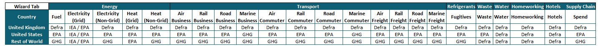
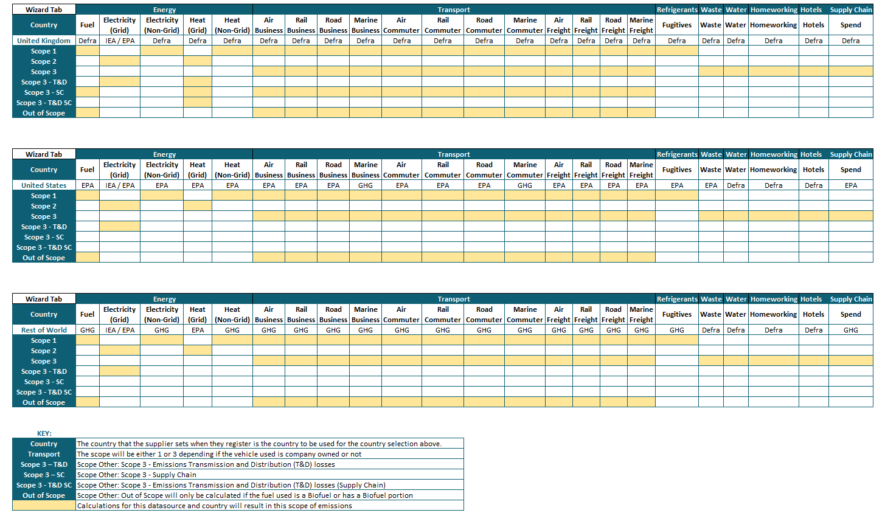

The software solution uses the GHG Protocol methodology for calculating the global emissions of our clients. Under this methodology, we use nationally recognised emissions factors, published by regulated authorities to ensure the robustness of our calculations. Emissions factors are applied at a datasource level in our solutions to ensure clients are using the most appropriate sets. Our emissions factors database includes over 1 million time-stamped, gas-specific emissions factors from sources including: GHG Protocol, EPA (USA), NGA (Australia), Defra (UK), CGGI (Canada), CEA (India), SEAI (Ireland), Spanish Government (Spain), Bilan Carbone (France) and IEA (International). The software also provides the ability for clients to input their own supplier specific emissions factors to meet the requirements of Scope 2 GHG Protocol reporting and apply RE-DISS II Residual Mix factors aligned with this methodology.
GHG Wizards are available in both the Supply-Chain Sustainability (SCS) and the Investor ESG Management solutions. These tools provide users with a pre-defined set of questions to be able to calculate the GHG emissions associated with their activities.
Emissions are automatically allocated to Scopes according to record details. On the GHG wizard dashboard, emissions are grouped into four categories: Scope 1, Scope 2, Scope 3 and Scope Other. Please see definitions of these scopes below.
Scope Other is made up of four categories:
Scope 1
GHG emissions from sources that are owned or controlled by the organisation e.g. emissions from combustion in owned or controlled boilers, furnaces and vehicles and also GHG emissions from owned or controlled process equipment e.g. air conditioning systems.
Scope 2
GHG emissions from the generation of electricity, steam or heating/cooling consumed by an organisation, i.e. purchased or otherwise brought into the organisational boundary. GHG emissions from such sources are a consequence of the organisation’s activities but physically occur at the source / facility where the electricity, steam or heating/cooling is generated.
Scope 3
GHG emissions resulting from activities that are not directly owned or controlled by the reporting organisation but are associated with and influenced by it. This category typically includes employee business travel, staff commuting to/from work, water consumption and waste production. Other Scope 3 emissions relate to the organisation’s supply chain and any products or services provided by the organisation.
Scope Other: Scope 3 – Emissions Transmission and Distribution (T&D) losses
This category of Scope 3 emissions relates to electricity losses that occur during transmission and distribution.
Scope Other: Scope 3 – Supply Chain
This category of Scope 3 emissions relates to emissions arising prior to the use of a fuel/energy carrier (or in the case of electricity, prior to the point of generation), i.e. as a result of extracting and transforming the primary energy source (e.g. crude oil) into the energy carrier (e.g. petrol). Scope 3 – Supply Chain emission factors have been available for organisations reporting in the UK since the UK Defra 2010 methodology update.
Scope Other: Scope 3 - Emissions Transmission and Distribution (T&D) losses (Supply Chain)
This category of Scope 3 emissions relates to electricity losses that occur during transmission and distribution due to an organisation’s Supply Chain (i.e. upstream) emissions.
Scope Other: Out of Scope
Emissions data for direct CO2 emissions from biologically sequestered carbon (e.g. CO2 from burning biomass / biofuels).
The GHG wizards use four sources of emissions factors:
Please refer to the Emissions Factors methodology for how these factors are checked, updated and deployed in the Emissions Factors database.
The GHG wizard assigned emissions factors based on a pre-defined mapping. Clients are not able to change this mapping. Please see the below mapping of emissions factors sources to the sections and data types contained in the GHG wizard:
Methodology Mapping


Notes:
When clients do not have actual consumption data, it is possible to estimate GHG emissions using cost data for some categories. The conversions are provided by Defra for the United Kingdom, EPA for the USA, and the GHG Protocol for the Rest of the World. The factors used for estimations are the same factors used in the Supply Chain Spend tab in the GHG wizards so users should avoid double-reporting data. The product categories that have been mapped to the different datasources in the wizard are detailed in the table below.
The EPA (USA) conversions have two options (with or without margins) and in the wizards the methodology uses the “with margins” option only.
| Methodology Reference | Country | Currency / Unit | Wizard Consumption Type(s) | Emission Factor Category |
|---|---|---|---|---|
| Defra | United Kingdom | GBP | Air Business, Air Freight, Air Commuter | Air Transport Services |
| Defra | United Kingdom | GBP | Hotels | Accommodation Services |
| Defra | United Kingdom | GBP | Electricity Grid | Electricity, Transmission, and Distribution |
| Defra | United Kingdom | GBP | Electricity Grid (Datacentre) | Information Services |
| Defra | United Kingdom | GBP | Natural Gas | Crude Petroleum and Natural Gas |
| Defra | United Kingdom | GBP | Water | Natural Water; Water Treatment and Supply Services |
| Defra | United Kingdom | GBP | Rail Business, Rail Freight, Rail Commuter | Rail Transport Services |
| Defra | United Kingdom | GBP | Waste | Waste Collection, Treatment and Disposal Services; Materials Recovery Services |
| Defra | United Kingdom | GBP | Road Business, Road Freight, Road Commuter | Land Transport Services and Transport Services via Pipelines, Excluding Rail Transport |
| Defra | United Kingdom | GBP | Marine Business, Marine Freight, Marine Commuter | Water Transport Services |
| EPA | United States | USD | Air Business, Air Freight, Air Commuter | Commodity - Air Transport |
| EPA | United States | USD | Electricity Grid | Commodity - Electricity |
| EPA | United States | USD | Electricity Grid (Datacentre) | Commodity - Data Processing and Hosting |
| EPA | United States | USD | Natural Gas | Commodity - Natural Gas |
| EPA | United States | USD | Water | Commodity - Drinking Water and Wastewater Treatment |
| EPA | United States | USD | Hotels | Commodity - Hotels and Campgrounds |
| EPA | United States | USD | Road Business, Road Freight, Road Commuter, Rail Business, Rail Freight, Rail Commuter | Commodity - Passenger Ground Transport |
| EPA | United States | USD | Road Business, Road Freight, Road Commuter, Rail Business, Rail Freight, Rail Commuter | Commodity - Truck Transport |
| EPA | United States | USD | Rail Business, Rail Freight, Rail Commuter | Commodity - Rail Transport |
| EPA | United States | USD | Waste | Commodity - Waste Management and Remediation |
| EPA | United States | USD | Marine Business, Marine Freight, Marine Commuter | Commodity - Water Transport (Boats, Ships, Ferries) |
| GHG | Rest of World | USD | Air Business, Air Freight, Air Commuter | Air Transport |
| EPA | Rest of World | USD | Electricity Grid, Natural Gas, Water | Electricity, Gas and Water Supply |
| EPA | Rest of World | USD | Hotels | Hotels and Restaurants |
| EPA | Rest of World | USD | Road Business, Road Freight, Road Commuter, Rail Business, Rail Freight, Rail Commuter | Inland Transport |
| EPA | Rest of World | USD | Waste | Refuse Services |
| EPA | Rest of World | USD | Marine Business, Marine Freight, Marine Commuter | Water Transport |
For electricity and natural gas, there is the ability for the GHG wizards to estimate consumption based on the property type and floor area. The estimated consumption is run through the Emissions Factors database to then calculate the location specific emissions factors based on the IEA.
The conversion rates for electricity are detailed in the table below.
| CBECS Building Type | Unit | Applicable From | Applicable To | kWh |
| Computer-based training room | kWh per square foot | Past | Present | 13.9 |
| Data center | kWh per square foot | Past | Present | 16.2 |
| Education | kWh per square foot | Past | 31/12/2017 | 11 |
| Education | kWh per square foot | 01/01/2018 | Present | 9.4 |
| Food sales | kWh per square foot | Past | 31/12/2017 | 48.7 |
| Food sales | kWh per square foot | 01/01/2018 | Present | 53.3 |
| Food service | kWh per square foot | Past | 31/12/2017 | 44.9 |
| Food service | kWh per square foot | 01/01/2018 | Present | 43.8 |
| Health care | kWh per square foot | Past | 31/12/2017 | 25.8 |
| Health care | kWh per square foot | 01/01/2018 | Present | 23.8 |
| Lodging | kWh per square foot | Past | 31/12/2017 | 15.3 |
| Lodging | kWh per square foot | 01/01/2018 | Present | 14.4 |
| Mercantile (Retail) | kWh per square foot | Past | 31/12/2017 | 18.3 |
| Mercantile (retail) | kWh per square foot | 01/01/2018 | Present | 16.7 |
| Office | kWh per square foot | Past | 31/12/2017 | 15.9 |
| Office | kWh per square foot | 01/01/2018 | Present | 13.6 |
| Other | kWh per square foot | Past | 31/12/2017 | 28.3 |
| Other | kWh per square foot | 01/01/2018 | Present | 29.1 |
| Public assembly | kWh per square foot | Past | 31/12/2017 | 14.5 |
| Public assembly | kWh per square foot | 01/01/2018 | Present | 12.1 |
| Public order and safety | kWh per square foot | Past | 31/12/2017 | 14.9 |
| Public order and safety | kWh per square foot | 01/01/2018 | Present | 13.9 |
| Religious worship | kWh per square foot | Past | 31/12/2017 | 5.2 |
| Religious worship | kWh per square foot | 01/01/2018 | Present | 4.9 |
| Server closet | kWh per square foot | Past | Present | 13.5 |
| Service | kWh per square foot | Past | 31/12/2017 | 8.3 |
| Service | kWh per square foot | 01/01/2018 | Present | 7.2 |
| Student or public computer center | kWh per square foot | Past | Present | 12.2 |
| Vacant | kWh per square foot | Past | 31/12/2017 | 4.5 |
| Vacant | kWh per square foot | 01/01/2018 | Present | 3.9 |
| Warehouse and storage | kWh per square foot | Past | 31/12/2017 | 6.6 |
| Warehouse and storage | kWh per square foot | 01/01/2018 | Present | 5.8 |
The conversion rates for natural gas are detailed in the table below.
| CBECS Building Type | Unit | Applicable From | Applicable To | Cubic Feet |
| Education | cubic feet per square foot | Past | 31/12/2017 | 29.8 |
| Education | cubic feet per square foot | 01/01/2018 | Present | 30.8 |
| Food sales | cubic feet per square foot | Past | 31/12/2017 | 61.3 |
| Food sales | cubic feet per square foot | 01/01/2018 | Present | 69.2 |
| Food service | cubic feet per square foot | Past | 31/12/2017 | 159.2 |
| Food service | cubic feet per square foot | 01/01/2018 | Present | 147.6 |
| Health care | cubic feet per square foot | Past | 31/12/2017 | 78.5 |
| Health care | cubic feet per square foot | 01/01/2018 | Present | 59.1 |
| Inpatient | cubic feet per square foot | Past | Present | 77.9 |
| Lodging | cubic feet per square foot | Past | 31/12/2017 | 43.8 |
| Lodging | cubic feet per square foot | 01/01/2018 | Present | 37 |
| Mercantile (retail) | cubic feet per square foot | Past | 31/12/2017 | 33.5 |
| Mercantile (retail) | cubic feet per square foot | 01/01/2018 | Present | 35.7 |
| Office | cubic feet per square foot | Past | 31/12/2017 | 26.8 |
| Office | cubic feet per square foot | 01/01/2018 | Present | 21.3 |
| Other | cubic feet per square foot | Past | Present | 29.2 |
| Outpatient | cubic feet per square foot | Past | Present | 27.8 |
| Public assembly | cubic feet per square foot | Past | 31/12/2017 | 33.9 |
| Public assembly | cubic feet per square foot | 01/01/2018 | Present | 39.8 |
| Public order and safety | cubic feet per square foot | Past | 31/12/2017 | 39.5 |
| Public order and safety | cubic feet per square foot | 01/01/2018 | Present | 35.5 |
| Religious worship | cubic feet per square foot | Past | 31/12/2017 | 28.1 |
| Religious worship | cubic feet per square foot | 01/01/2018 | Present | 22.2 |
| Service | cubic feet per square foot | Past | 31/12/2017 | 42.7 |
| Service | cubic feet per square foot | 01/01/2018 | Present | 41.9 |
| Vacant | cubic feet per square foot | Past | 31/12/2017 | 13.9 |
| Vacant | cubic feet per square foot | 01/01/2018 | Present | 19.2 |
| Warehouse and storage | cubic feet per square foot | Past | 31/12/2017 | 19.4 |
| Warehouse and storage | cubic feet per square foot | 01/01/2018 | Present | 18.6 |
Source of data up till 31/12/2017: CBECS Building types and intensity factors.
Reference: https://www.eia.gov/consumption/commercial/data/2012/c&e/cfm/pba4.php
Source of data from 01/01/2018 onward: CBECS Building types and intensity factors.
Reference: https://www.eia.gov/consumption/commercial/data/2018/index.php?view=methodology
To convert the kWh per square foot to square metre the value was multiplied by 10.76391042.